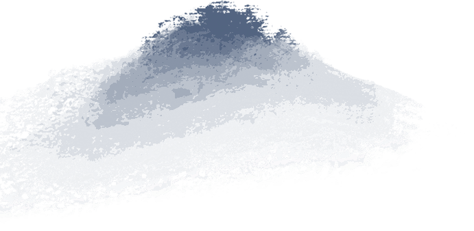
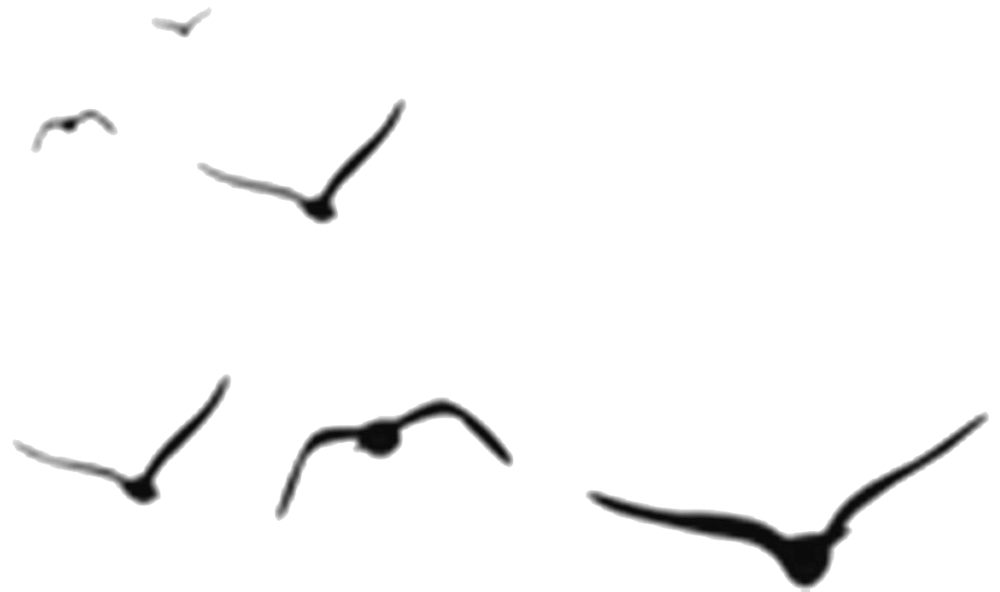
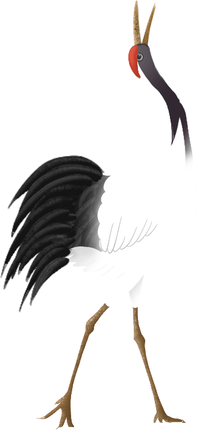
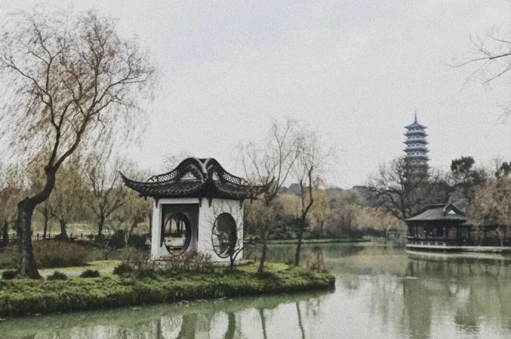
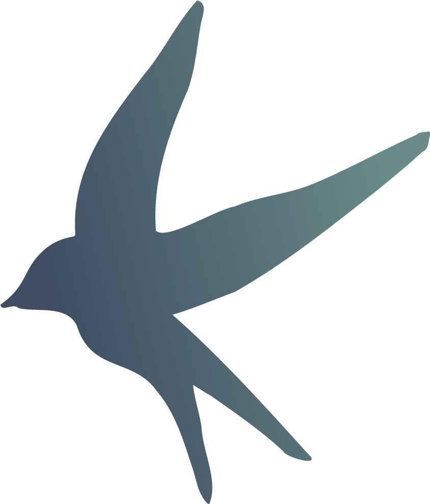
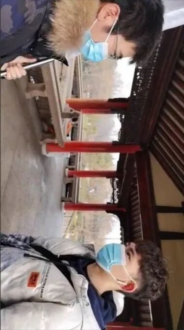
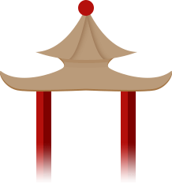
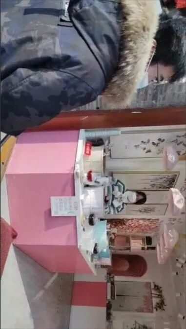
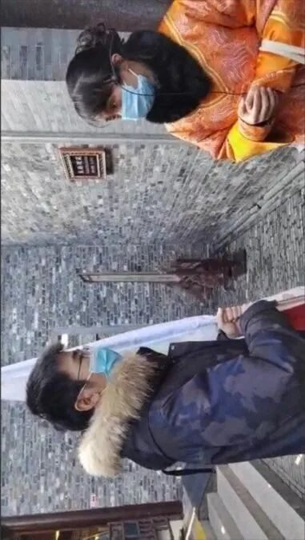

湖光潋滟入梦，人间烟火慰心

— 行者无疆·赓续前行 —
湖光潋滟入梦
人间烟火慰心

打扬州走过
瘦西湖的过往在耳畔呢喃
信步闲庭
于万千灯火中窥见东关街的繁华
流连个园
沉醉于奇石修竹的秀丽隽永
今天是实践团来到扬州的第一天，我们携手共同走过瘦西湖、东关街、个园，共同品味文化的魅力。

力 匕
阝 勹
烟云入梦

瘦西湖
廴 匚
厶

垂杨不断接残芜，
雁齿虹桥俨花图。
也是销金一锅子。
故应唤作瘦西湖。
咏保障河
清朝诗人汪沆的一首《咏保障河》使得扬州的瘦西湖闻名天下。
瘦西湖原名保障湖，在清代康乾时期已形成基本格局，有“园林之盛，甲于天下”之誉。清乾隆年间，扬州的盐业兴盛，瘦西湖由于年长日久，湖心淤塞，盐商便出资疏浚，并在东西岸兴建起许多亭台楼阁。2014年，瘦西湖作为“中国大运河”遗产点之一被列入世界文化遗产名录。如今，我们故地重游，开启新的发现与邂逅。我们行过五亭桥，路过二十四桥，看到白塔风光，瞥见小金山的宁静雅致。


中途我们遇到了前来观光的游客，与游客交谈过程中，我们向他普及了瘦西湖的来源背景以及有关瘦西湖水质变化的问题，交流使我们更深刻的理解到了环境保护的重要性。我们还遇见了晨练的老爷爷，老爷爷作为扬州本地人，为我们讲述了瘦西湖景色背后的小故事，一方水土养一方人，老爷爷脸上的笑意就是对这片风景最好的注释。
纵有冬风料峭，瘦西湖仍旧保有几分春色，于愁云惨淡中划破萧瑟，孕育着新的生机。漫步湖边，一桥一水都值得驻足停留，新的遇见与感悟在一呼一吸之间写就。

力 匕
阝 勹
烟火人间
东关街
廴 匚
厶
东关街是扬州城里最具有代表性的一条历史老街。它东至古运河边，西至国庆路，全长1122米。东关街以前不仅是扬州水陆交通要道，而且是商业、手工业和宗教文化中心。

街面上市井繁华、商家林立，行当俱全，生意兴隆。实践团走近东关街，感受到了浓厚的传统文化氛围，街两旁商铺林立，谢馥春香粉店、庆丰茶食店、恒茂油麻店……不胜枚举。行者们怀着无比激动的心情来到了东关街，走了不久，我们就遇见了两位十分可爱的小姐姐。两位小姐姐在街上贩卖茶叶的店里工作，看到我们就热情地招呼我们品尝各种花茶。我们被小姐姐的热情与可爱感染，一时间，言语融洽，气氛欢快。


一群素昧平生的人在这条古色古香的街上相遇，没有那么多的顾虑，有的只是心与心的交流，来自灵魂最深处的共情。人间烟火味，最抚凡人心。置身于东关街，你会不自觉被它的市井气息所感染，见惯了城市的灯红酒绿，须知，此心安处才是吾乡。东关街带着沉淀数百年的传统手艺向你走来，邀你共享一场文化的盛宴。
力 匕
阝 勹
清幽淡雅
个园
廴 匚
厶
“个园”——是扬州历史最悠久、保存最完整、最具艺术价值的艺术园林之一，位于扬州古城北隅，这座清代扬州盐商宅邸私家园林，以遍植青竹而名，以春夏秋冬四季假山而胜。因园主人爱竹，并在园内种竹万竿，所以个园的名称也是由竹而来。


竹是个园的灵魂所在，走在个园的小道上，竹香清幽 ，竹影横斜，清幽的环境让人气定神闲，神清气爽，可当得一句“竹西佳处”。个园的叠石艺术亦是闻名天下，笋石、湖石、黄石、宣石叠成的春夏秋冬四季假山，被称为“国内孤例”。叠石与各种竹子交相呼应，构成了四季假山，可谓精妙绝伦。

在这里，我们遇到了一位经验丰富的导游，行者们跟随导游的脚步，漫步在这片韵味悠长的的古典园林当中。导游为我们悉心讲解了个园中的一草一木以及独属于他们的故事，此刻，每一块石头都被赋予了特殊的含义，一砖一石都有它精巧的构思，雅致的审美。我们穿梭在瑰丽奇巧的个园里，嶙峋的叠石使人神往，挺拔的劲竹令人赞叹。
沉溺于碧波荡漾的瘦西湖
徜徉在清幽淡雅的个园
在东关街的无限繁华中流连忘返
在依依不舍中，第一天的实践圆满结束。蕴含在江南水乡中的文化力量指引着我们不断前行。
来源 | 行者无疆实践团
文字 | 孙思涵
排版 | 高懿玢
审核 | 温兆琪 朱华玮